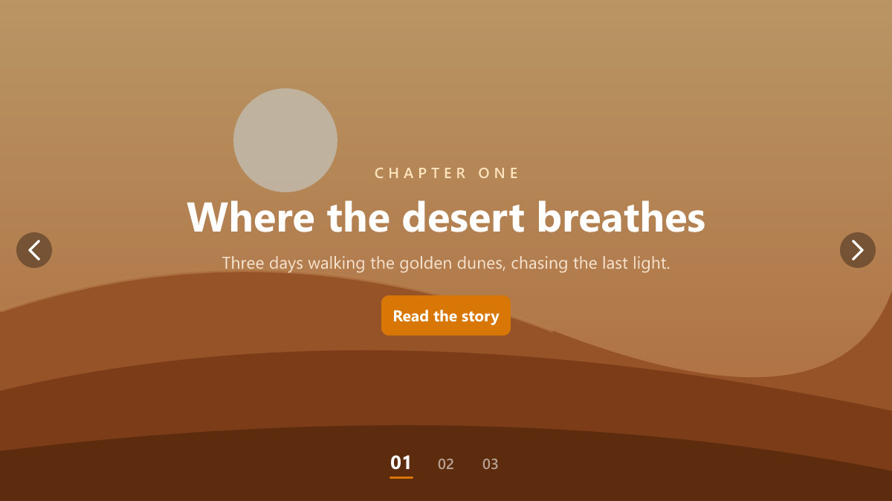

App Stories
A mobile-app hero slider wearing the Stories Progress skin — the current segment fills over the autoplay interval, just like app stories.
Neon Tech
A dark gaming/tech hero slider wearing the Neon skin — accent-glow arrows, dots and frame over synthwave artwork.

Photo Journal
A magazine-style photo story wearing the Numbers skin — 01 / 02 / 03 pagination with slow Ken Burns zoom over painterly landscapes.
Latest Posts
A dynamic slider that builds itself from your newest blog posts — featured image, title, excerpt and link — and refreshes as you publish. Fade-up text, Ken Burns zoom.
Nature Showcase
A cinematic full-width hero slider with a gradient overlay, Ken Burns zoom and animated text.
Business Pro
A professional, corporate hero slider with bold headings and clear calls to action.

Creative Agency
A bold split-layout slider for studios and agencies — visuals on one side, message on the other. Wears the Soft skin (pill arrows, soft shadows).

Restaurant
A warm, appetising hero slider for restaurants, cafes and food businesses — with thumbnail navigation for browsing the dishes.
Testimonials
A clean testimonial slider for showcasing customer quotes and reviews.
Product Carousel
A multi-slide carousel for products, categories and offers — shows several slides at once.
Fullscreen Bold
A dramatic full-height slider with bold typography for portfolios and landing pages. Wears the Corner skin (arrows tucked into the corner).
Minimal Clean
An understated, text-focused slider that lets your message lead. Wears the Minimal skin (thin arrows, line pagination).